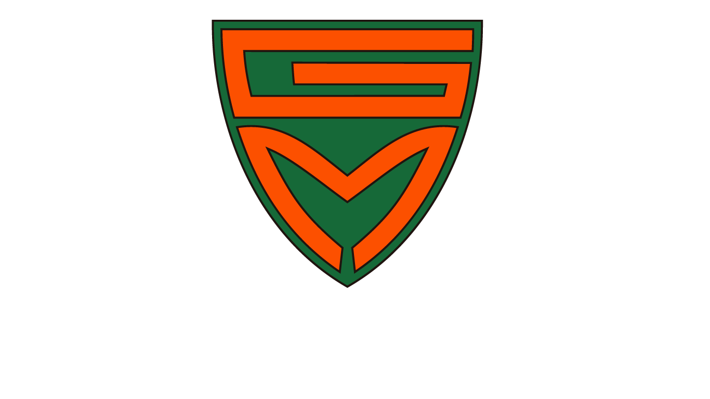
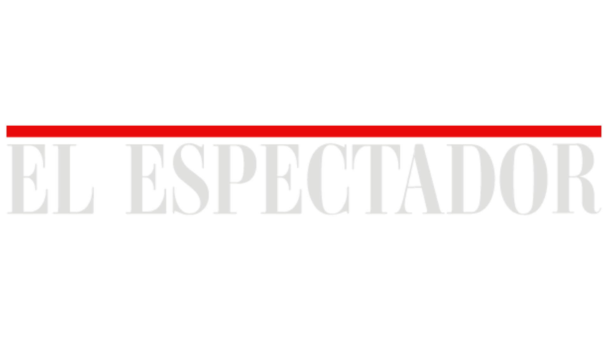

Quiénes lo hacen posible
Organizadores
Fundación Fahrenheit 451
La Fundación Fahrenheit 451 es una organización sin ánimo de lucro fundada en Bogotá en 2007 que, con más de 17 años de trayectoria, gestiona proyectos culturales enfocados en transformar vidas a través de la literatura y la narrativa. Inspirados en la obra de Ray Bradbury y bajo el lema de invertir el símbolo de la censura para preservar las voces de comunidades vulnerables, utilizan las historias como herramientas de reparación simbólica, inclusión y construcción de memoria histórica en Colombia y Latinoamérica.
Con el apoyo de

Ministerio de las Culturas, las Artes y los Saberes

Instituto Distrital de las Artes (IDARTES)
Aliados
Universidad El Bosque

Programa Crea
Universidad Central
Librería Urapán

Universidad Konrad Lorenz

Auditorio Sonia Fajardo

Gimnasio Moderno
Medios
